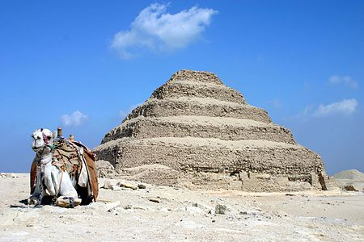
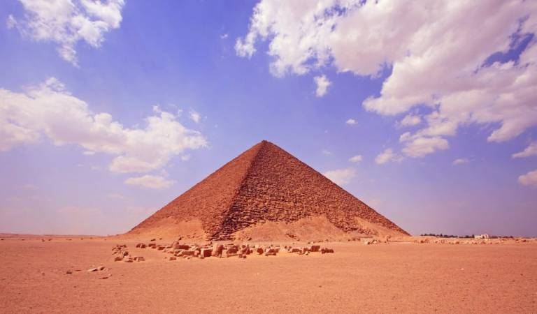
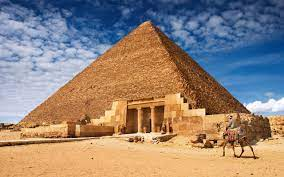
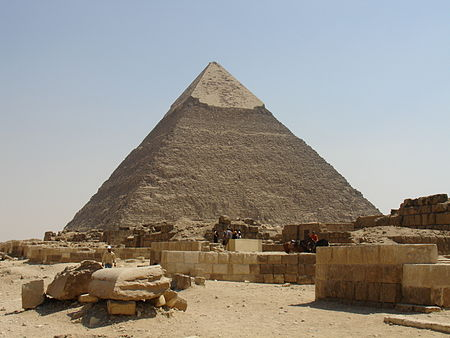
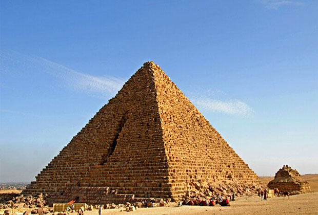
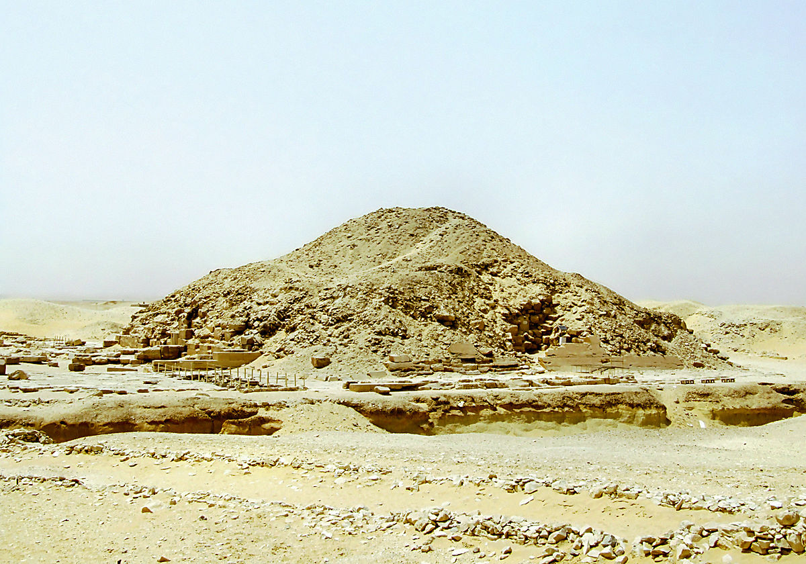

Pyramids
Pyramids

Djoser's pyramid
The Pyramid of Saqqara or the Step Pyramid is an archaeological landmark in the Saqqara necropolis.....
Read More...

snefro's pyramid
The Red Pyramid also known as the North Pyramid is the largest pyramid located in Dahshur in Giza in Egypt......
Read More...

Khufu's pyramid
The Great Pyramid or the Pyramid of Khufu is the only surviving monument of the Seven Wonders of the World.....
Read More...

Khafre's pyramid
It is one of the pyramids of Giza in Egypt. It was built by King Khafre, the fourth king of the Fourth Dynasty.....
Read More...

Menkaure's pyramid
It is the smallest of the three pyramids of Giza in Egypt. It was built by King Menkaure, son of King Khafre.....
Read More...

unas's pyramid
It is located in the area of the pyramids of Saqqara, which is the pyramid built by Unas.....
Read More...
Djoser's pyramid
The Pyramid of Djoser or the Pyramid of Saqqara or the Step Pyramid is an archaeological landmark in the Saqqara necropolis northwest of the ancient city of Memphis in Egypt. It was built during the 27th century BC to bury the pharaoh Djoser; It was built by his vizier Imhotep. The engineer and physician Amhotep was the main architect of the vast funerary ensemble in the courtyard of the pyramid and the surrounding ceremonial structures. The first Egyptian pyramid consisted of six terraces that were built on top of each other, something that represented a huge development in the design of tombs in that era, which was satisfied with one mastaba. The Step Pyramid of Djoser is 62 meters (203 ft) high, with a base measuring 109 m by 125 m (358 ft by 410 ft), and was covered in polished white limestone. The Step Pyramid is the first stone structure of its time, although the yard known as the Director's Bridge appears to have preceded the pyramid's construction.
snefro's pyramid
The Red Pyramid, also known as the North Pyramid, is the largest pyramid located at Dahshur in Giza in Egypt. Named because of the rusty red color of its red limestone stones, this pyramid is also the third largest Egyptian pyramid, after the pyramids of Khufu and Khafre at Giza. It is also believed to be the first successful Egyptian attempt to build a smooth-sided "real" pyramid. The locals refer to the red pyramid as the "Bat Pyramid". The red pyramid was not always red. It was encased in white Tora limestone, but now only a few of these stones remain at the base of the pyramid, at the corner. During the Middle Ages, much of the white Tora limestone was taken for buildings in Cairo, revealing the red limestone underneath.
The Red Pyramid is the third pyramid built by King Sneferu, and is located approximately one kilometer north of the Leaning Pyramid of Sneferu.
Khufu's pyramid
The Great Pyramid or the Pyramid of Khufu is the only surviving monument of the Seven Wonders of the World. It is located in the Giza Pyramids area in Egypt, which is registered among the UNESCO World Heritage Sites. The construction of the pyramid dates back to about 2560 BC, when it was built as a tomb for Pharaoh of the Fourth Dynasty Khufu, and its construction continued for 20 years. The construction of the Great Pyramid is a major cultural shift in the history of ancient Egypt. Khufu was influenced by his father, King Sneferu, in building his pyramid. After his death, Khufu became the ruling deity on earth, and it became necessary for him to think about building his tomb, which is the first national project in ancient Egypt, which was built by professional workers from all over Egypt. The Great Pyramid, with its original height of 148 meters, remained the highest building completed by man on Earth over a period of 3800 years.
Khafre's pyramid
The pyramid of Khafre is one of the pyramids of Giza in Egypt. It was built by King Khafre, the fourth king of the Fourth Dynasty, the son of King Khufu. He married Princess Ankh berths. Twenty-six years rule. The second pyramid was built from the pyramids of Giza, and it is lower than the pyramid of his father (Khufu). Its height was 143 meters and now it is 136 meters. It was built over an area of 215 square meters. It has two entrances on the north side. It still retains part of its outer covering at the top. Within its hierarchical group, statues of schist stone were found in the private valley temple, including a statue of the most beautiful Egyptian sculpture produced, and it is located in the Egyptian Museum, and is attributed to him carving the rock of the Sphinx.
Menkaure's pyramid
The Pyramid of Menkaure or the Pyramid of Menkaure is the smallest of the three pyramids of Giza in Egypt. It was built by King Menkaure, son of King Khafre of the Fourth Egyptian Dynasty. The length of each of its sides is 108.5 meters, its height is 65.5 meters, and it is now 62 meters long after the fall of its outer covering.
With an original height of 65.5 meters (215 feet), the Pyramid of Menkaure was the smallest of the three major pyramids in the Giza pyramid complex. Its height is now 61 meters (200 ft) and its base is 108.5 meters (356 ft). Its tilt angle is about 51° 20-25°. It was constructed of limestone from Tora and granite from Aswan. The first sixteen courses on the outside were made of red granite. The upper part was coated in the normal way with limestone from Tora.
unas's pyramid
The pyramid of Unas is located in the area of the pyramids of Saqqara, and it is the pyramid built by Unas, the last king of the Fifth Dynasty.
The texts covering the walls of the burial chambers inside the pyramid were the first discoveries of the pyramid texts. In the same burial chamber, mummy remains were found, including the skull, right arm and leg, but it is not known whether these remains belong to Unas or not. To the northeast of the pyramid, there is a mastaba containing the tombs of the king's consorts.
It is believed that in the inscriptions of the pyramid of Unas inside the burial chamber, there are some writings in a Semitic dialect, written in ancient Egyptian letters, which is the oldest evidence of a written Semitic language
.